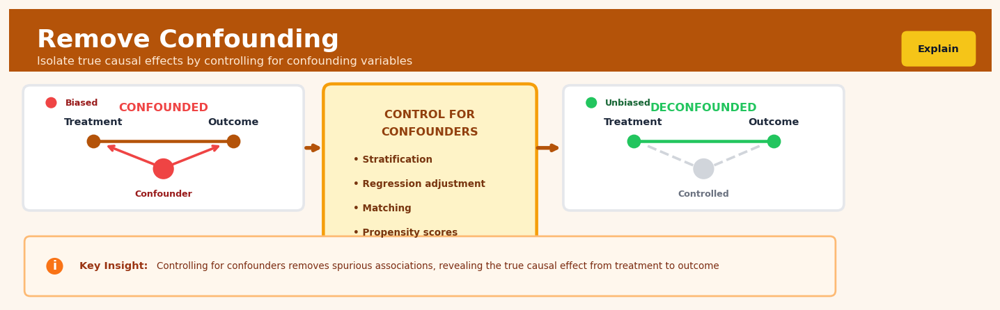

Remove Confounding#


The most common mistake is controlling for colliders or mediators instead of true confounders, which actually introduces bias rather than removing it. Always draw your causal DAG first to identify which variables are genuinely common causes of both treatment and outcome before adding them to your model. Remember that more controls does not always mean less bias—you need the right controls, not just more controls.
The 60-Second Version#
What it does: Remove Confounding separates the true effect of a decision or action from misleading patterns caused by other factors that influence both what you do and what happens.
When to use it: Use this when you need to estimate what would happen if you changed a policy, treatment, or intervention, but you can’t run a controlled experiment and suspect other variables are creating false correlations.
What you get back: An adjusted estimate of causal impact that tells you how much the outcome would actually change if you implemented the intervention, stripped of distortions from confounding factors.
Difficulty |
Moderate |
Typical runtime |
Seconds to minutes on 100K rows |
What you bring |
Observational data with treatment, outcome, and suspected confounders measured |
What you get |
Causal effect estimate isolated from confounding bias |
Heuristix bucket |
Explain — Causal Analysis & Interpretation |
Remove Confounding only works if you’ve identified and measured all the important confounding variables—unmeasured confounders will silently bias your results.
Learning Objectives#
After reading this chapter, a business user will be able to:
Identify when an observed correlation is potentially spurious due to confounding factors, such as distinguishing whether a marketing campaign truly drives sales or whether both are driven by seasonal demand.
Interpret adjusted treatment effects from confounding analysis and explain to stakeholders why the “controlled” estimate differs from the naive comparison (e.g., “After accounting for customer demographics, the actual lift from our loyalty program is 12%, not the 25% we initially observed”).
Decide whether to invest in a business intervention based on confounding-adjusted estimates that isolate the true causal effect from background factors that inflate or mask the real impact.
After reading this chapter, a data scientist will be able to:
Implement regression adjustment, propensity score weighting, and doubly robust estimators to remove confounding bias, correctly handling both continuous and categorical confounders in the model specification.
Select the appropriate set of adjustment variables by applying backdoor criterion rules, balancing the trade-off between including necessary confounders to eliminate bias and avoiding colliders or mediators that introduce new biases.
Validate confounding removal by checking covariate balance after adjustment, conducting sensitivity analyses to assess robustness to unmeasured confounding, and diagnosing violations of positivity or overlap assumptions that invalidate causal estimates.
Overview#
Remove Confounding is a family of statistical adjustment techniques designed to isolate the causal effect of a treatment or exposure variable on an outcome by controlling for common causes that influence both. The core purpose is to eliminate spurious associations arising from confounders—variables that create a backdoor path between treatment and outcome—thereby enabling valid causal inference from observational data. This technique belongs to the broader class of causal identification and estimation methods rooted in the potential outcomes framework and structural causal models, encompassing regression adjustment, stratification, inverse probability weighting, and doubly robust estimation.
When to Use This#
Estimating treatment effects from observational data: When randomised experiments are infeasible or unethical (e.g., measuring the effect of smoking on health outcomes), and you must rely on historical or naturally occurring data where treatment assignment is not random.
Marketing attribution with self-selection bias: When customers who receive a promotional offer differ systematically from those who do not (e.g., high-value customers are targeted more frequently), and you need to isolate the true lift of the campaign.
Policy evaluation in public sector: When assessing the impact of a government intervention (e.g., job training programmes) where participants self-select or are selected based on observable characteristics correlated with outcomes.
Healthcare outcomes research: When comparing treatment efficacy across patient groups where treatment assignment depends on disease severity, comorbidities, or physician preferences.
Pricing and demand analysis: When estimating price elasticity from sales data where prices are set based on demand forecasts or competitor actions, creating endogeneity between price and quantity sold.
HR and workforce analytics: When evaluating whether a training programme improves employee performance, but programme participation is correlated with employee motivation or prior performance.
Do NOT use this when treatment assignment is truly random: In properly randomised controlled trials, confounding is eliminated by design; adjustment may reduce precision or introduce bias if covariates are post-treatment.
Do NOT use this when confounders are unmeasured: If the backdoor paths cannot be blocked because relevant variables are unavailable, adjustment methods will fail to identify the causal effect—consider instrumental variables or sensitivity analysis instead.
Do NOT use this when adjusting for colliders or mediators: Including variables that are consequences of both treatment and outcome (colliders) or lie on the causal pathway (mediators) will introduce bias rather than remove it.
Do NOT use this for prediction tasks: If your goal is forecasting rather than causal understanding, standard predictive modelling without causal adjustment is more appropriate.
Questions This Answers#
Understanding True Impact vs. Coincidence#
Is our new loyalty program actually driving the 12% increase in repeat purchases, or are we just attracting customers who would have bought more anyway?
Did the marketing campaign cause sales to jump 25% in August, or was that just the seasonal back-to-school surge we see every year?
Are customers who use our mobile app spending more because of the app experience, or do heavy spenders just prefer mobile?
When we see that users who read our blog convert 40% more often, is the blog working or are already-interested prospects simply more likely to read it?
Is the training program improving employee performance by 15%, or did we just enroll our most motivated employees?
Making Better Investment Decisions#
Should we expand our premium service to more cities given its success in San Francisco, or does it only work there because of the demographic mix?
If we spend an additional $500K on digital ads next quarter, will we actually see the same 3:1 ROI we’re measuring now, or is something else driving those conversions?
Which performs better—email or SMS reminders—when we account for the fact that we’re sending them to different customer segments?
Is it worth paying 20% more for the premium vendor, or are the better outcomes their clients report really just because larger companies choose them?
Should we roll out the new onboarding process company-wide after seeing 30% better retention in the pilot, or were the pilot stores already our best performers?
Evaluating Past Decisions Fairly#
Did relocating our customer service team actually improve satisfaction scores by 8 points, or did satisfaction improve everywhere that quarter?
When Store A outperforms Store B by 22%, is that the manager’s effectiveness or just neighborhood differences?
Are we right to credit the new pricing strategy for our margin improvement, or would margins have improved anyway with the supplier cost decrease?
How It Works#
Imagine you’re trying to figure out whether drinking coffee actually boosts workplace productivity, so you survey 200 employees at your company. You notice that coffee drinkers complete 20% more tasks per day—but wait. The heavy coffee drinkers also happen to be the morning people who arrive at 7 AM when the office is quiet, while non-coffee-drinkers tend to arrive at 9 AM into a noisy, distraction-filled environment. The early arrival time is a confounder: it affects both coffee drinking habits (morning people drink more coffee) and productivity (early birds have fewer distractions). To find coffee’s true effect, you need to compare coffee drinkers and non-drinkers who arrive at the same time—effectively removing the confounding influence of arrival time.
CONFOUNDED VIEW REMOVING THE CONFOUNDER
Arrival Time Arrival Time
↓ ↘ |
↓ ↘ (controlled)
↓ ↘ |
Coffee → Productivity ┌───┴───┐
↓ ↓
Spurious path! Coffee → Productivity
Within each arrival group:
┌─────────────────────────┐
│ 7AM arrivals: │
│ Coffee: 25 tasks/day │
│ No coffee: 23 tasks │
│ Effect: +2 tasks │
├─────────────────────────┤
│ 9AM arrivals: │
│ Coffee: 18 tasks/day │
│ No coffee: 16 tasks │
│ Effect: +2 tasks │
└─────────────────────────┘
True effect: +2 tasks
(not the misleading +5!)
Step 1: Identify the confounders. You start by listing variables that might create backdoor paths—factors that influence both your treatment (coffee drinking) and your outcome (productivity). Age, arrival time, job role, and sleep quality all qualify. You need domain knowledge here; the data can’t tell you what causes what.
Step 2: Divide your data into homogeneous groups. Take arrival time as one confounder. You split your 200 employees into groups: those arriving at 7 AM, those at 8 AM, and those at 9 AM. Within each time slot, people face similar distraction levels, so arrival time no longer varies—you’ve “held it constant.”
Step 3: Compare treatment and control within each group. Inside the 7 AM group, you compare coffee drinkers to non-drinkers. They arrive at the same time, so any productivity difference can’t be attributed to arrival time. You repeat this for the 8 AM and 9 AM groups separately.
Step 4: Calculate the effect in each group. In the 7 AM group, coffee drinkers complete 2 more tasks. In the 8 AM group, also 2 more. In the 9 AM group, also 2 more. Each comparison is “clean” because the confounder doesn’t vary within the group.
Step 5: Combine the group-specific effects. You take a weighted average of these within-group effects (weighted by group size) to get coffee’s overall true effect: about 2 additional tasks per day, not the misleading 5 you saw initially.
The key insight: By comparing like with like—people who share the same confounder values—you close backdoor paths and isolate the direct causal arrow from treatment to outcome.
The Intuition#
Imagine you want to know whether attending a prestigious university causes graduates to earn higher salaries. You observe that graduates of elite universities do indeed earn more on average. But wait—students admitted to elite universities typically come from wealthier families, attended better secondary schools, and possessed higher academic ability before university. These pre-existing advantages would have led to higher earnings regardless of which university they attended. Family background and prior ability are confounders: they influence both the “treatment” (attending an elite university) and the outcome (future earnings). The raw salary difference conflates the university’s true causal effect with these pre-existing advantages.
Removing confounding is like running a thought experiment: “What would the earnings difference be if we could compare two otherwise identical individuals—same family background, same prior ability—who differed only in which university they attended?” Since we cannot literally clone people and send copies to different universities, we use statistical methods to approximate this comparison. We find individuals in our data who are similar on all measured confounders but differ in their treatment status, and we compare their outcomes. By holding confounders constant, we block the “backdoor paths” through which spurious associations flow, leaving only the direct causal pathway from treatment to outcome.
The key insight is that correlation does not imply causation precisely because of confounding. When we observe a statistical association between X and Y, three explanations exist: X causes Y, Y causes X, or some third variable Z causes both. Confounding adjustment rules out the third explanation by conditioning on Z. This is not merely a statistical convenience but a reflection of the underlying causal structure. The technique works because, under certain assumptions, conditioning on all confounders renders the treatment independent of potential outcomes—a property called conditional ignorability or selection on observables. When this holds, the adjusted association equals the causal effect.
The Mathematics#
Problem Setup and Notation#
Let \(Y\) denote the outcome of interest, \(T\) denote a binary treatment indicator (\(T = 1\) for treated, \(T = 0\) for control), and \(\mathbf{X} = (X_1, X_2, \ldots, X_p)\) denote a vector of \(p\) pre-treatment covariates. We adopt the potential outcomes framework: let \(Y(1)\) be the outcome that would be observed under treatment, and \(Y(0)\) be the outcome under control. The observed outcome is:
The Average Treatment Effect (ATE) is defined as:
The Average Treatment Effect on the Treated (ATT) is:
The Identification Problem#
The fundamental problem of causal inference is that we observe either \(Y(1)\) or \(Y(0)\) for each unit, never both. The naive estimator:
is generally biased for \(\tau_{\text{ATE}}\) because:
Selection bias arises when treated and control units differ systematically in their baseline potential outcomes.
Assumptions for Identification#
Assumption 1: Conditional Ignorability (Unconfoundedness)
Given the covariates \(\mathbf{X}\), treatment assignment is independent of potential outcomes. This means \(\mathbf{X}\) includes all common causes of \(T\) and \(Y\).
Assumption 2: Positivity (Overlap)
Every unit has a non-zero probability of receiving either treatment or control, conditional on covariates.
Assumption 3: Stable Unit Treatment Value Assumption (SUTVA)
No interference between units and no hidden variations of treatment:
Regression Adjustment#
Under the above assumptions, the conditional average treatment effect is identified as:
The ATE is recovered by averaging over the covariate distribution:
In linear regression, we model:
where \(\mathbb{E}[\epsilon \mid T, \mathbf{X}] = 0\). The OLS estimator for \(\tau\) is:
where \(\mathbf{Z} = [\mathbf{1}, \mathbf{T}, \mathbf{X}]\) is the design matrix.
Note
The linear model assumes constant treatment effects and additive confounding. When treatment effect heterogeneity exists, include interaction terms \(T \cdot \mathbf{X}\) or use flexible estimators.
Inverse Probability Weighting (IPW)#
The propensity score is defined as:
Rosenbaum and Rubin (1983) proved that if \((Y(0), Y(1)) \perp\!\!\!\perp T \mid \mathbf{X}\), then \((Y(0), Y(1)) \perp\!\!\!\perp T \mid e(\mathbf{X})\). This reduces the dimensionality of adjustment from \(p\) covariates to a single scalar.
The IPW estimator for the ATE is:
This reweights observations to create a pseudo-population where treatment is independent of confounders.
Normalised IPW (Hajek estimator):
This ensures weights sum to one within each treatment group, improving finite-sample stability.
Doubly Robust Estimation#
The Augmented IPW (AIPW) estimator combines outcome regression and propensity score weighting:
where \(\hat{\mu}_t(\mathbf{x}) = \hat{\mathbb{E}}[Y \mid T = t, \mathbf{X} = \mathbf{x}]\).
Double robustness property: \(\hat{\tau}_{\text{AIPW}}\) is consistent if either the propensity score model or the outcome model is correctly specified (but not necessarily both).
Edge Cases and Degenerate Conditions#
Near-violation of positivity: When \(\hat{e}(\mathbf{x}) \approx 0\) or \(\hat{e}(\mathbf{x}) \approx 1\), IPW weights become extreme, inflating variance. Solutions include trimming (discarding units with extreme propensity scores) or stabilised weights.
Perfect separation: When covariates perfectly predict treatment, propensity score estimation fails. This indicates a structural positivity violation.
Multicollinearity: High correlation among confounders with treatment leads to unstable regression coefficients. Regularisation or dimensionality reduction may help.
Unmeasured confounding: When \(\mathbf{X}\) does not include all confounders, all methods produce biased estimates. Sensitivity analysis (e.g., Rosenbaum bounds) quantifies robustness to hidden bias.
Understanding the Mathematics#
The Fundamental Confounding Bias Equation#
The equation: $\(E[Y | T=1] - E[Y | T=0] = E[Y^1 - Y^0 | T=1] + E[Y^0 | T=1] - E[Y^0 | T=0]\)$
Read it aloud: This says: the difference in observed outcomes between treated and untreated groups equals the average treatment effect on the treated, plus the baseline difference between groups if neither had been treated.
What each symbol means:
\(E[\cdot]\) = expected value (average) of whatever is inside the brackets
\(Y\) = the outcome we’re measuring (e.g., revenue, health status)
\(T\) = treatment indicator (1 = received treatment, 0 = did not)
\(Y^1\) = potential outcome if treated
\(Y^0\) = potential outcome if untreated
The vertical bar “|” means “given that” or “among those where”
A concrete numerical example: Suppose we compare salaries of employees who received leadership training (\(T=1\)) versus those who didn’t (\(T=0\)). The average salary for trained employees is \(95,000, untrained is \)72,000. The naive difference is \(23,000. But trained employees were already higher performers. If we could observe their salaries *without* training, they'd average \)88,000, while the untrained group would still be at \(72,000. The true causal effect is \)95,000 - \(88,000 = \)7,000. The remaining $16,000 is confounding bias from pre-existing differences.
Why this equation matters: This equation reveals that observational comparisons contain hidden bias—ignore it, and you’ll attribute pre-existing differences to your intervention, wasting resources on ineffective programs.
The Backdoor Adjustment Formula#
The equation: $\(P(Y | \text{do}(T=t)) = \sum_{c} P(Y | T=t, C=c) \cdot P(C=c)\)$
Read it aloud: This says: the causal effect of setting treatment to a specific value equals the weighted average of outcomes across all confounder levels, where weights are the natural frequencies of those confounder levels.
What each symbol means:
\(P(\cdot)\) = probability distribution of an outcome
\(\text{do}(T=t)\) = actively setting treatment to value \(t\) (causal intervention)
\(C\) = set of confounding variables
\(\sum_{c}\) = sum across all possible values of confounders
The multiplication (\(\cdot\)) creates weighted combinations
A concrete numerical example: We want the causal effect of digital ads (\(T\)) on purchases (\(Y\)), but tech-savviness (\(C\)) confounds the relationship. Among high-tech users (40% of population), ads increase purchase probability from 15% to 25%. Among low-tech users (60%), ads increase it from 8% to 12%. The causal effect is \((0.25 \times 0.4 + 0.12 \times 0.6) - (0.15 \times 0.4 + 0.08 \times 0.6) = 0.172 - 0.108 = 6.4\) percentage points, properly accounting for the confounder distribution.
Why this equation matters: This formula transforms observational data into causal estimates by standardizing across confounders—without it, you’d misattribute natural group differences to your marketing campaign.
The Propensity Score Formula#
The equation: $\(e(X) = P(T=1 | X)\)$
Read it aloud: This says: the propensity score equals the probability of receiving treatment given a person’s observed characteristics.
What each symbol means:
\(e(X)\) = propensity score (a single number between 0 and 1)
\(X\) = vector of all observed covariates (age, income, history, etc.)
\(P(T=1 | X)\) = probability of treatment conditional on characteristics
A concrete numerical example: A customer is 45 years old, income \(85,000, has purchased twice before. A logistic model estimates their probability of receiving a promotional email (treatment) as 0.73. Another customer—age 28, income \)45,000, zero purchases—has propensity 0.21. These scores let us compare similar customers: we match the first customer only with others near 0.73, avoiding bias from comparing fundamentally different groups.
Why this equation matters: Propensity scores compress dozens of confounders into one number for matching or weighting, making adjustment computationally feasible when you have many confounding variables.
The Big Picture#
The mathematics of removing confounding fundamentally aims to separate correlation from causation by blocking spurious pathways between treatment and outcome. We use these specific formulas—rather than simple comparisons—because they explicitly model the counterfactual: what would have happened to treated individuals had they not been treated. The backdoor formula achieves this through stratification and reweighting, ensuring we compare apples to apples across confounder levels. Propensity scores simplify high-dimensional adjustment into a single balancing score, proven mathematically to preserve all confounding information. In essence, these equations formalize a simple intuition: to know if medicine works, compare sick people who took it to equally sick people who didn’t—the math just makes “equally sick” precise and measurable across countless dimensions simultaneously.
Python Implementation#
import numpy as np
import pandas as pd
from sklearn.linear_model import LogisticRegression
import statsmodels.api as sm
from scipy import stats
# =============================================================================
# Generate realistic synthetic data with confounding
# =============================================================================
np.random.seed(42)
n = 2000
# Confounders: age and income
age = np.random.normal(45, 12, n)
income = np.random.normal(50000, 15000, n)
# Treatment assignment depends on confounders (creates confounding)
# Higher age and income -> more likely to receive treatment
propensity_true = 1 / (1 + np.exp(-(-3 + 0.03 * age + 0.00002 * income)))
treatment = np.random.binomial(1, propensity_true)
# Potential outcomes with heterogeneous treatment effect
y0 = 100 + 0.5 * age + 0.0005 * income + np.random.normal(0, 10, n)
y1 = y0 + 15 + 0.2 * (age - 45) # True ATE = 15, with age interaction
# Observed outcome
outcome = treatment * y1 + (1 - treatment) * y0
# Create DataFrame
df = pd.DataFrame({
'age': age,
'income': income,
'treatment': treatment,
'outcome': outcome
})
print("=" * 60)
print("DATA SUMMARY")
print("=" * 60)
print(f"Sample size: {n}")
print(f"Treatment rate: {treatment.mean():.3f}")
print(f"True ATE: 15.0 (by construction)")
print(f"True ATT: {(y1[treatment == 1] - y0[treatment == 1]).mean():.2f}")
# =============================================================================
# Method 1: Naive comparison (biased due to confounding)
# =============================================================================
naive_ate = df[df['treatment'] == 1]['outcome'].mean() - \
df[df['treatment'] == 0]['outcome'].mean()
print(f"\nNaive ATE estimate (biased): {naive_ate:.2f}")
# =============================================================================
# Method 2: Regression adjustment with OLS
# =============================================================================
# Include confounders as controls
X_reg = sm.add_constant(df[['treatment', 'age', 'income']])
model_ols = sm.OLS(df['outcome'], X_reg).fit()
print("\n" + "=" * 60)
print("REGRESSION ADJUSTMENT (OLS)")
print("=" * 60)
print(f"Estimated ATE: {model_ols.params['treatment']:.2f}")
print(f"95% CI: [{model_ols.conf_int().loc['treatment', 0]:.2f}, "
f"{model_ols.conf_int().loc['treatment', 1]:.2f}]")
print(f"p-value: {model_ols.pvalues['treatment']:.4f}")
# =============================================================================
# Method 3: Inverse Probability Weighting (IPW)
# =============================================================================
# Step 1: Estimate propensity scores
X_ps = df[['age', 'income']]
ps_model = LogisticRegression(max_iter=1000)
ps_model.fit(X_ps, df['treatment'])
propensity_scores = ps_model.predict_proba(X_ps)[:, 1]
# Clip propensity scores to avoid extreme weights
propensity_clipped = np.clip(propensity_scores, 0.05, 0.95)
## Visualisations


## Using This in Heuristix
### What You'll Need
The Remove Confounding node expects a single dataset with your treatment variable, outcome variable, and potential confounders all in the same table. Think of it as needing everything in one place before you start adjusting.
**Required columns:**
- **Treatment variable** (categorical or binary) — the intervention or exposure you're studying
- **Outcome variable** (numeric or categorical) — what you're trying to measure the effect on
- **Confounders** (any type) — variables that might influence both treatment and outcome
**Example input data:**
| patient_id | received_treatment | recovery_days | age | severity | income_level |
|------------|-------------------|---------------|-----|----------|--------------|
| 001 | Yes | 12 | 45 | High | Medium |
| 002 | No | 18 | 52 | Low | High |
| 003 | Yes | 9 | 38 | Medium | Low |
All your variables should be in separate columns, with one row per observation.
### Configuration Parameters
| Parameter | What It Controls | Default | When to Change It |
|-----------|-----------------|---------|-------------------|
| **Treatment Column** | Which column represents your treatment/exposure | (none) | Always set this to your intervention variable |
| **Outcome Column** | Which column is your outcome of interest | (none) | Always set this to what you're measuring |
| **Confounder Columns** | Which variables to adjust for | (none) | Select variables you believe cause both treatment and outcome |
| **Adjustment Method** | Statistical technique used | Regression | Use "IPW" for near-violations of positivity; "Doubly Robust" when unsure |
| **Treatment Reference Level** | Baseline for comparison (binary/categorical) | First alphabetically | Set to your true control/comparison group |
| **Propensity Score Model** | Model for treatment probability (IPW/DR methods) | Logistic | Use "GBM" for complex treatment patterns |
| **Include Interaction Terms** | Allow confounders to interact with treatment | No | Enable when treatment effects vary by subgroup |
| **Confidence Level** | Width of uncertainty intervals | 95% | Rarely change; 90% or 99% for specific reporting needs |
### What You'll Get Back
**Output columns added to your dataset:**
- **adjusted_effect** — the estimated causal effect after removing confounding
- **propensity_score** (if using IPW/DR) — predicted probability of receiving treatment
- **residual** — difference between observed and expected outcome
**Metrics panel displays:**
- **Average Treatment Effect (ATE)** — the overall causal impact across your population
- **Confidence Interval** — statistical uncertainty range
- **Covariate Balance Statistics** — how well confounders are balanced post-adjustment (SMD values < 0.1 indicate good balance)
**Visualizations:**
- **Balance Plot** — before/after standardized mean differences for each confounder
- **Effect Estimate Plot** — treatment effect with confidence intervals
- **Propensity Score Distribution** (IPW/DR only) — overlap between treatment groups
### Connecting Downstream
This node typically flows into:
- **Subgroup Analysis** — explore how effects vary across populations
- **Sensitivity Analysis** — test robustness to unmeasured confounding
- **Prediction** nodes — use adjusted effects for scenario modeling
- **Report Builder** — communicate findings with confidence
### Quick Start: Most Common Use Case
1. **Drag your observational dataset** into the canvas and connect it to Remove Confounding
2. **Select your treatment column** (e.g., "received_training") from the dropdown
3. **Select your outcome column** (e.g., "productivity_score")
4. **Add confounder columns** — start with demographics and pre-treatment characteristics
5. **Leave Adjustment Method as "Regression"** for your first pass
6. **Click Run** and review the Balance Plot — look for all bars within the ±0.1 zone
7. **Check the ATE** in the metrics panel — this is your adjusted causal effect
### Practical Tips from Experience
**Start conservative with confounders.** It's tempting to throw every variable in, but only include true confounders (common causes). Including mediators or instruments can bias your results.
**Check propensity score overlap** when using IPW or Doubly Robust methods. If treatment and control groups have non-overlapping propensity scores, your estimates will be unstable. Consider trimming extreme values or switching to regression.
**The Balance Plot is your diagnostic friend.** If standardized mean differences remain large (>0.1) after adjustment, you may need interaction terms or a more flexible model.
**Domain knowledge beats algorithms.** No statistical method can fix a missing confounder. Spend time identifying all common causes before running the adjustment—consult subject matter experts.
**Watch for positivity violations.** If some covariate combinations deterministically predict treatment (everyone with X always gets treated), causal effects aren't identifiable for those subgroups. The tool will flag this, but you'll need to restrict your analysis accordingly.
## Config Recipes
### Recipe 1: Quick Exploration with Propensity Score Matching
**When to use:** Initial exploratory analysis when you need fast feedback on whether confounding is substantially biasing your treatment effect estimate, working with datasets under 10,000 observations.
**Settings:**
| Parameter | Value | Why |
|-----------|-------|-----|
| `method` | `"psm"` | Fastest to compute, intuitive to validate visually |
| `caliper` | `0.2` | Standard width balances match rate with quality |
| `matching_ratio` | `1:1` | Minimizes computation while preserving interpretability |
| `balance_check` | `"standardized_diff"` | Quick diagnostic without bootstrapping |
| `estimation` | `"att"` | Focuses on treated units only, fewer assumptions |
**What you get:** A point estimate of treatment effect with basic covariate balance diagnostics in under 30 seconds for most datasets.
**Trade-off:** You discard unmatched observations (often 20-40%), sacrificing statistical power and potentially external validity.
### Recipe 2: Production-Grade Doubly Robust Estimation
**When to use:** Final analysis for publication, regulatory submission, or high-stakes business decisions where robustness to model misspecification is critical.
**Settings:**
| Parameter | Value | Why |
|-----------|-------|-----|
| `method` | `"aipw"` | Augmented inverse probability weighting—consistent if either propensity or outcome model is correct |
| `propensity_model` | `GradientBoostingClassifier(n_estimators=500, max_depth=4, learning_rate=0.01)` | Flexible enough to capture nonlinear confounding without severe overfitting |
| `outcome_model` | `GradientBoostingRegressor(n_estimators=500, max_depth=4, learning_rate=0.01)` | Matches propensity model complexity |
| `cross_fitting` | `k=5` | Reduces overfitting bias in nuisance parameter estimation |
| `ci_method` | `"bootstrap"` | Conservative uncertainty quantification |
| `n_bootstrap` | `1000` | Industry standard for stable confidence intervals |
| `trim_propensity` | `(0.05, 0.95)` | Excludes extreme weights that destabilize estimates |
**What you get:** A treatment effect estimate robust to model misspecification with reliable 95% confidence intervals.
**Trade-off:** Computation time increases 50-100x compared to simple methods; requires 5-10x more observations for stable propensity score estimation.
### Recipe 3: High-Dimensional Confounding with Regularization
**When to use:** You have 50+ potential confounders (e.g., claims data with hundreds of diagnosis codes) and suspect only a subset truly matter, but you don't know which.
**Settings:**
| Parameter | Value | Why |
|-----------|-------|-----|
| `method` | `"ipw"` | Separates confounder selection from outcome modeling |
| `propensity_model` | `LogisticRegressionCV(penalty='elasticnet', l1_ratio=0.7, solver='saga', cv=10)` | L1-dominant penalty performs variable selection automatically |
| `weight_stabilization` | `True` | Prevents extreme weights in high dimensions |
| `max_weight` | `10` | Hard cap on any single observation's influence |
**What you get:** Automated confounder selection that handles collinearity and identifies the sparse set of true confounders.
**Trade-off:** Less efficient than doubly robust methods when you actually need all covariates; propensity score interpretation becomes harder.
### Recipe 4: Negative Control Outcome for Unmeasured Confounding Detection
**When to use:** You suspect unmeasured confounding but can identify an outcome that treatment should *not* affect (e.g., analyzing drug effects on heart disease using bone fractures as negative control).
**Settings:**
| Parameter | Value | Why |
|-----------|-------|-----|
| `method` | `"regression"` | Simple enough to run twice (primary + negative control) |
| `outcome` | `[primary_outcome, negative_control_outcome]` | Parallel estimation |
| `covariates` | `same_set` | Identical adjustment for valid comparison |
| `alpha` | `0.10` | Liberal threshold for detecting bias signals |
**What you get:** Evidence of whether residual confounding persists—non-null effect on negative control invalidates your primary estimate.
**Trade-off:** Requires domain knowledge to identify valid negative controls; doesn't fix the bias, only detects it.
## Business Applications
**Financial Services**
A regional Australian bank sought to measure the true impact of offering financial literacy workshops to credit card customers, hoping to reduce late payment fees. Customers who attended workshops also tended to have higher credit scores and longer tenure—confounders that independently predict better payment behavior. By applying inverse probability weighting to remove confounding from credit score, income, and account age, analysts isolated the workshop's genuine effect: a 23% reduction in late payments among attendees versus matched non-attendees, justifying expansion of the $480K annual program budget.
**Retail & E-commerce**
A fashion e-commerce platform with 1.8M active customers wanted to assess whether their mobile app drove incremental revenue or simply attracted already-engaged shoppers. App users were younger, urban, and made more frequent purchases even before downloading—classic confounding. Stratification by demographic and purchase history revealed the app's true causal lift: $47 per customer per year after removing confounding effects, translating to $12.3M in genuinely incremental annual revenue attributable to the app investment.
**Healthcare & Life Sciences**
A private hospital network needed to evaluate whether a new post-surgical monitoring protocol actually improved 30-day readmission rates or merely appeared effective because healthier patients were selected for it. Surgeon preference, patient comorbidities, and insurance type all confounded the treatment assignment. Doubly robust estimation removed these confounding pathways, revealing that the protocol reduced readmissions from 8.2% to 5.7%—a genuine 30% improvement—supporting a system-wide rollout across 14 facilities.
**Insurance**
A commercial property insurer piloted IoT water leak sensors for high-value clients, but participants were already risk-averse businesses in newer buildings with lower baseline claim rates. Without removing confounding from building age, property value, and claim history, the program would falsely appear more effective than reality. Regression adjustment isolated the sensor's true effect: 41% fewer water damage claims after controlling for confounders, validating a $2.8M expansion to 5,000 additional properties.
**Manufacturing**
A mid-sized automotive parts manufacturer implemented lean training for production supervisors but needed to separate training impact from supervisor selection bias—more experienced, already-efficient supervisors volunteered first. By controlling for tenure, baseline defect rates, and shift assignment through propensity score matching, the analysis revealed lean training genuinely reduced defect rates by 19%, from 3.4% to 2.8%, driving quality improvements worth approximately $890K annually in reduced rework and warranty claims.
**Logistics & Supply Chain**
A Southeast Asian logistics provider wanted to quantify whether route optimization software improved delivery times or simply benefited from being deployed in easier territories first. Territory population density, road quality, and average package weight confounded the comparison between software-enabled and traditional routes. Remove confounding techniques isolated the software's true contribution: 22 minutes saved per route (down from 4.2 hours to 3.8 hours average), justifying infrastructure investment across 200 additional delivery zones.
**Marketing & Advertising**
A subscription streaming service tested whether personalized email campaigns increased retention, but customers receiving personalized emails were already more engaged—they had higher viewing hours and longer tenure. This confounding masked the email's actual impact. Inverse probability weighting adjusted for baseline engagement metrics and demographic factors, revealing personalized campaigns lifted 6-month retention by 4.2 percentage points (from 71% to 75.2%), supporting budget reallocation of $1.6M toward personalization infrastructure.
**Telecommunications**
A national mobile carrier examined whether bundling home internet with mobile plans reduced churn, but customers who bundled were systematically different—families with homeowners showing lower churn naturally. Stratification by household type, contract length, and payment history removed confounding, showing bundle offers genuinely reduced monthly churn from 2.3% to 1.7%, representing 18,000 customers retained annually worth $43M in preserved lifetime value.
**Energy & Utilities**
A municipal electricity provider piloted time-of-use pricing to shift peak demand but needed to isolate pricing effects from customer self-selection—environmentally conscious, wealthier households volunteered first and already used less peak energy. Regression adjustment for income, home size, and historical usage patterns revealed time-of-use pricing shifted 12% of peak consumption to off-peak hours, enabling the utility to defer a $34M grid infrastructure upgrade.
**Public Sector**
A workforce development agency evaluated whether job placement services improved long-term employment outcomes, facing severe confounding—motivated job seekers with stronger networks self-selected into the program. Matching participants to non-participants on education, previous employment gaps, and local unemployment rates isolated the program's true causal effect: participants were 28 percentage points more likely to maintain employment after 18 months (68% versus 40%), justifying continued funding of the $2.4M annual program.
**SaaS & Technology**
A B2B SaaS company with 12,000 enterprise clients wanted to measure whether offering live onboarding calls (versus self-service) improved product adoption, but sales teams assigned calls to higher-value contracts who would likely engage more anyway. Propensity score weighting removed confounding from contract size, industry, and team size, revealing live onboarding genuinely increased feature adoption by 31% and reduced time-to-value from 45 days to 28 days.
## Worked Example
Sarah Chen, a senior data scientist at VitalHealth Insurance, was halfway through her morning coffee when her director of product marketing walked into her office with a printout of campaign metrics. "We need to talk about our wellness app," he said, sliding the sheet across her desk. "We launched it six months ago, and members who use it have 18% lower healthcare costs. Marketing wants to double down on promotion, but I need you to tell me if this is real."
The stakes were significant. VitalHealth was considering a $2.3 million marketing push to drive app adoption, based on the assumption that the app itself was causally reducing costs. But Sarah knew the question beneath the question: were healthy people simply more likely to download a wellness app in the first place?
Sarah spent the next two days pulling together a dataset of 50,000 members, linking app usage records with claims data, demographics, and baseline health indicators. The data was messy in the usual ways—some members had incomplete health risk assessments, a few had clearly erroneous ages entered (one member was listed as 127 years old), and the app usage logs had some duplicate entries that needed deduplication. After cleaning, she had a solid analytical dataset:
| member_id | used_app | monthly_cost | age | baseline_chronic_conditions | prior_year_cost |
|-----------|----------|--------------|-----|----------------------------|-----------------|
| M10234 | 1 | 285 | 34 | 0 | 310 |
| M10891 | 0 | 720 | 58 | 2 | 695 |
| M11203 | 1 | 190 | 29 | 0 | 205 |
| M11547 | 0 | 450 | 45 | 1 | 480 |
| M12009 | 1 | 520 | 62 | 1 | 515 |
Sarah opened her causal analysis environment and configured a Remove Confounding node. She specified `used_app` as the treatment variable and `monthly_cost` as the outcome. For confounders, she selected age, baseline chronic conditions, and prior year healthcare costs—all variables that she knew would influence both someone's likelihood to download a health app and their current medical expenses. She chose doubly robust estimation because she wanted protection against misspecification in either the treatment or outcome model. "Belt and suspenders," she muttered to herself, thinking about the size of the marketing budget riding on this analysis.
```python
import pandas as pd
import numpy as np
from sklearn.linear_model import LogisticRegression, LinearRegression
from sklearn.preprocessing import StandardScaler
# Sarah's analysis script for wellness app causal effect
df = pd.read_csv('member_health_data_clean.csv')
# Define variables
treatment = df['used_app']
outcome = df['monthly_cost']
confounders = df[['age', 'baseline_chronic_conditions', 'prior_year_cost']]
# Standardize confounders for stable estimation
scaler = StandardScaler()
X = scaler.fit_transform(confounders)
# Propensity score model (probability of app usage)
ps_model = LogisticRegression(max_iter=1000)
ps_model.fit(X, treatment)
propensity_scores = ps_model.predict_proba(X)[:, 1]
# Inverse probability weights
weights = treatment / propensity_scores + (1 - treatment) / (1 - propensity_scores)
weights = np.clip(weights, 0, 10) # Trim extreme weights
# Outcome regression adjusting for confounders
outcome_model = LinearRegression()
outcome_model.fit(np.column_stack([X, treatment]), outcome)
# Calculate average treatment effect
ate_weighted = np.average(outcome[treatment == 1], weights=weights[treatment == 1]) - \
np.average(outcome[treatment == 0], weights=weights[treatment == 0])
print(f"Average Treatment Effect: ${ate_weighted:.2f} per member per month")
The results appeared on her screen:
Metric |
Value |
|---|---|
Naive difference (unadjusted) |
-$127/month |
Average Treatment Effect (ATE) |
-$23/month |
95% Confidence Interval |
[-\(41, -\)5] |
Members analyzed |
49,847 |
Sarah sat back. The naive comparison showed app users costing \(127 less per month—the 18% figure marketing had been citing. But after removing confounding from age, baseline health status, and prior costs, the true causal effect was only \)23 per month. Still statistically significant, still beneficial, but dramatically smaller.
The insight crystallized: healthier, younger members with lower baseline costs were indeed much more likely to adopt the app. The raw difference was mostly selection bias. The app was working, but it wasn’t a miracle cure.
Three days later, Sarah presented to the executive team. She showed both numbers side by side. “The app reduces costs by about \(23 per member per month," she explained. "That's meaningful, but it means our ROI calculations need to be revised downward by about 80%." After discussion, the team approved a scaled-back \)600,000 pilot campaign focused on higher-risk members who were less likely to self-select into app usage—a strategy that wouldn’t have made sense under the naive analysis.
Reflecting on the project later, Sarah wished she’d had better data on members’ health literacy and tech savviness—likely confounders she couldn’t measure. She also noted that the analysis assumed no interference between members, which probably wasn’t quite true in a workplace wellness context where colleagues might influence each other. But she’d given the business a much more accurate picture than the raw correlation, and that mattered.
Interpreting Your Results#
You’ve just adjusted for confounders and now you’re staring at adjusted treatment effects, balance diagnostics, and sensitivity analyses. Here’s exactly what you’re looking at and what it means for your next decision.
The Adjusted Treatment Effect#
Plain-English meaning: This is your answer—the estimated causal effect of your treatment on the outcome after removing the influence of confounders. If you’re evaluating whether a marketing campaign drives sales, this number tells you the sales lift attributable to the campaign itself, not to the fact that certain customer segments were more likely to receive it.
Concrete benchmarks:
Confidence interval excludes zero: Your effect is statistically distinguishable from no effect. A 95% CI of [2.3, 8.7] means you’re reasonably confident there’s a positive effect.
Confidence interval includes zero: You cannot rule out that there’s no effect. A CI of [-1.2, 4.5] means the data doesn’t support a confident causal claim.
Effect magnitude: Compare your adjusted effect to the unadjusted (naive) effect. If the unadjusted effect was 10 and the adjusted is 3, confounding was responsible for 70% of what you initially observed—a major red flag about bias in naive analysis.
Red flags:
Sign flip: Adjusted effect is positive but unadjusted was negative (or vice versa). This suggests strong confounding or model misspecification. Investigate whether you’ve included the right confounders.
Implausible magnitude: An adjusted effect claiming your email campaign increased revenue by 400% per customer should trigger deep skepticism about unmeasured confounding or data quality issues.
Balance Diagnostics (Standardized Mean Differences)#
Plain-English meaning: These statistics show whether your adjustment successfully made the treatment and control groups comparable on measured confounders. Think of it as checking whether your statistical method successfully simulated a randomized experiment.
Concrete benchmarks:
SMD < 0.1: Excellent balance. Treatment and control groups are practically identical on this confounder.
SMD 0.1–0.25: Acceptable balance. Some residual difference remains but unlikely to seriously bias results.
SMD > 0.25: Poor balance. This confounder still differs substantially between groups, meaning confounding may not be fully removed.
Red flags:
Balance worse after adjustment: If SMD increases after your adjustment, something is fundamentally wrong with your model specification or weight calculation.
Imbalance on key confounders: If your subject-matter knowledge says age is the critical confounder and it has SMD = 0.45, you haven’t solved the confounding problem.
Overlap/Common Support Diagnostics#
Plain-English meaning: These visualizations (often propensity score distributions) show whether you have comparable units in both treatment and control groups. Without overlap, you’re extrapolating dangerously—comparing treated units that have no comparable controls.
Red flags:
Non-overlapping distributions: If your propensity score plots show treated units concentrated at 0.8–1.0 and controls at 0.0–0.2, you lack common support. Any causal effect estimate will be highly speculative.
Extreme weight concentration: In IPW approaches, if >10% of your effective sample comes from <5% of observations (due to extreme weights), your results are driven by a handful of unusual cases.
Reading Multiple Outputs Together#
The credibility combination:
Good balance (SMD < 0.1) + reasonable overlap + stable effects across models = High confidence in your causal estimate
Mediocre balance (SMD 0.15–0.25) + excellent overlap + similar results from regression and IPW = Moderate confidence; consider sensitivity analyses
Poor balance (SMD > 0.25) OR no overlap OR wildly different results across methods = Low confidence; do not act on these results
Sanity Check Checklist#
Before trusting your results, verify:
Positivity check: Do you have both treated and untreated units at all levels of your confounders? Missing combinations mean you’re extrapolating.
Balance improvement: Are post-adjustment SMDs smaller than pre-adjustment SMDs for all important confounders?
Effective sample size: After weighting or trimming, do you still have >100 effective observations? Very small effective N means unstable estimates.
Effect stability: Run the same adjustment with 2-3 methods (regression, IPW, matching). If results differ by >50%, investigate why.
Covariate significance: In regression adjustment, are your confounders actually predictive of the outcome (p < 0.10)? If not, they may not be true confounders.
Good Enough to Act On?#
Your result is actionable when: (1) all balance diagnostics show SMD < 0.15, (2) your confidence interval excludes zero with adequate margin (e.g., a 95% CI of [1.5, 6.2] for an effect you need to be at least 1.0), (3) results are consistent across at least two adjustment methods within 25%, and (4) the adjusted effect size is practically meaningful for your decision context. If all four conditions hold, stop analyzing and start deciding.
Decision Guidance#
What This Result Is Telling You#
When you’ve completed a confounding removal analysis, you’re looking at the true causal impact of your intervention, policy, or business lever—stripped of the noise created by factors that naturally correlate with both your action and your outcome. For example, if you’re evaluating whether a premium service tier increases customer lifetime value, confounding removal tells you the effect of the tier itself, separate from the fact that wealthier customers both choose premium tiers and naturally spend more. Without this adjustment, you’d be measuring correlation, not causation, and you’d likely overestimate your impact.
The adjusted effect size tells you how much change in your outcome metric you can actually attribute to your decision or intervention. If your unadjusted analysis showed a 15% revenue increase from a new pricing strategy, but confounding removal reduces that to 8%, the 8% is what you should expect if you roll out the strategy to similar customers. The 7% difference wasn’t real impact—it was customers who were already predisposed to spend more selecting into your new pricing tier.
This matters for resource allocation and forecasting. If you’re deciding whether to invest $2M scaling a pilot program, you need to know the causal effect, not the inflated correlation. The adjusted estimate is your basis for ROI projections, budget requests, and strategic commitments. It separates what you can control through action from what was already going to happen.
Decision Points#
If you see this… |
It means… |
Recommended action |
Who acts on this |
|---|---|---|---|
Adjusted effect differs from unadjusted by <10% (e.g., unadjusted +12%, adjusted +11%) |
Confounding is minimal; your initial read was mostly correct |
Proceed with original business case using adjusted estimate; flag low confounding in stakeholder communications |
Product/Program Owner |
Adjusted effect is 30-70% smaller than unadjusted (e.g., unadjusted +20%, adjusted +8%) |
Substantial confounding was present; initial enthusiasm was inflated |
Revise ROI forecasts downward; re-evaluate program scale and investment level before expansion |
Finance + Strategy Teams |
Adjusted effect crosses zero or reverses sign (e.g., unadjusted +5%, adjusted -2%) |
Apparent benefit was entirely spurious; intervention may actually harm outcomes |
Halt rollout immediately; investigate whether pilot should be discontinued; consider inverse interventions |
Executive Leadership |
Confidence intervals after adjustment span zero widely (e.g., -5% to +8%) |
Confounding removal worked, but sample size is insufficient for conclusive causal claims |
Extend pilot duration or expand sample; defer major investment decisions until uncertainty narrows |
Analytics + Program Teams |
Residual imbalance remains on key confounders (standardized difference >0.2 after adjustment) |
Adjustment was incomplete; causal estimate may still be biased |
Return to analysis phase; consider additional confounders, different adjustment methods, or experimental validation |
Data Science Team |
When to Proceed vs. Investigate Further#
Proceed with confidence when:
Adjusted effect size is statistically significant (p < 0.05) and confidence interval doesn’t include zero
Covariate balance after adjustment shows standardized differences <0.1 on all key confounders
Sensitivity analysis shows conclusions hold under realistic violations of assumptions
Effect direction matches domain expertise and theoretical expectations
Proceed with caution when:
Confidence intervals are wide (spanning more than 50% of the point estimate in either direction)
Only 70-90% of confounders achieve balance (standardized differences 0.1-0.2)
Adjusted estimate is directionally correct but economically small relative to implementation costs
Investigate before acting when:
Effect estimate changes substantially (>30%) across different adjustment methods (regression vs. weighting vs. matching)
Key confounders remain imbalanced (standardized differences >0.2) after adjustment
Sample size in any treatment/control subgroup falls below 100 observations
Unmeasured confounders are likely and sensitivity analysis shows fragility
Do not use these results yet when:
Overlap/common support is violated (propensity scores show no overlap regions)
Positivity assumption fails (some covariate combinations have zero probability of treatment)
More than 15% of sample excluded due to missing confounder data
Results are highly sensitive to functional form choices or model specification
The Cost of Getting This Wrong#
If you misinterpret confounded results as causal, you will make investment decisions based on phantom effects. Imagine committing $5M to scale a loyalty program nationwide because your pilot showed 20% higher purchase rates—only to discover post-launch that the “effect” was actually high-value customers self-selecting into the program, and the true causal impact is just 3%. You’ve now locked in fixed costs, set executive expectations, and potentially foregone alternative investments with genuine ROI. Worse, when results disappoint, leadership loses confidence in data-driven decisions entirely. Conversely, if you dismiss a genuinely effective intervention because you didn’t properly adjust for confounding (thinking the effect is spurious when it’s real), you miss competitive advantage and leave value on the table. Both errors are expensive: one wastes capital on ineffective programs, the other wastes opportunity by killing effective ones prematurely.
Common Pitfalls#
The Post-Treatment Confounder
Here is what happened: A health policy analyst was studying whether a new diabetes medication reduced hospitalizations. They carefully adjusted for confounders including age, BMI, and initial blood glucose. But they also controlled for “medication adherence score” measured three months into treatment. Their model showed almost no effect of the medication. They concluded the drug was ineffective and recommended against its adoption.
Why it happens: The intuition to “control for everything we have” runs deep. Medication adherence wasn’t a pre-treatment variable—it was affected by the treatment itself. By controlling for it, the analyst inadvertently blocked the very pathway through which the drug worked.
How to detect it: Check the temporal sequence of every covariate. If the data dictionary shows measurement dates after treatment assignment, or if the variable name suggests it’s an outcome of treatment (“compliance,” “engagement,” “response”), you’ve likely controlled for a mediator. Run a version excluding suspicious variables—if your treatment effect suddenly appears or grows substantially, you’ve been blocking the mechanism.
The fix: Restrict adjustment variables strictly to pre-treatment covariates that could plausibly cause both treatment selection and the outcome.
The Collider Corruption
Here is what happened: A junior data scientist analyzed whether online course completion improved job placement rates. They had data only on students who responded to a six-month follow-up survey. They adjusted for demographics and prior education, ran propensity score matching, and found course completion was actually negatively associated with employment. They concluded the courses might be harming career prospects.
Why it happens: Conditioning on survey response created a selection problem. Survey response was a collider—influenced by both course completion and employment status. Unemployed completers were more likely to respond (seeking help), while employed non-completers were less likely (too busy), artificially creating a negative association.
How to detect it: Examine response rates or sample inclusion by treatment and outcome combinations. Calculate the 2×2 table: completers employed (response rate), completers unemployed (response rate), non-completers employed, non-completers unemployed. If response rates vary systematically—especially if one diagonal is high while the other is low—you have collider bias. Compare effect estimates on the full sample (using imputation or weighting for missingness) versus complete cases.
The fix: Model the selection process explicitly with inverse probability of censoring weights or use bounds analysis to understand the range of possible true effects.
The Confounder That Wasn’t Measured
Here is what happened: An experienced marketing analyst studied whether email campaigns increased purchases using propensity score matching on customer demographics, purchase history, and website behavior. Balance diagnostics looked perfect—standardized mean differences all below 0.1. The matched sample showed a 40% lift in purchases. Three months after the campaign scaled, actual purchases increased only 8%.
Why it happens: No diagnostic tells you about variables you didn’t measure. The analyst couldn’t see that campaign timing systematically coincided with product restocks. Customers who visited the site when inventory was low were less likely to receive emails (the targeting algorithm avoided them). The “effect” was really just measuring product availability.
How to detect it: The gap between experimental validation and observational results is your signal. If A/B test results dramatically differ from your adjusted observational estimates, unmeasured confounding is likely. Domain experts expressing surprise (“But that effect size doesn’t match our mechanistic understanding”) is another red flag. Check for temporal patterns—do treatment effects vary by week, season, or operational factors not in your model?
The fix: Conduct sensitivity analyses showing how strong unmeasured confounding would need to be to explain away your effect, and transparently report these bounds.
The Feedback Loop Phantom
Here is what happened: A senior data scientist evaluated whether showing users personalized recommendations increased engagement. They controlled for past engagement levels when adjusting for confounders. Users with high past engagement who saw recommendations showed massive increases. They recommended expanding the feature.
Why it happens: Past engagement influenced who saw recommendations, but recommendations also influenced past engagement for users who had the feature in previous sessions. The “past engagement” variable was both confounder and outcome, creating a feedback loop that absorbed some of the true effect.
How to detect it: Look for variables that could be both cause and consequence over time. If your treatment has been deployed in any limited capacity before the analysis period, be suspicious of any “baseline” measure of your outcome variable.
The fix: Use only pre-deployment data for confounders, or employ methods like marginal structural models that properly handle time-varying treatments and confounders.
Common Misconceptions#
“If I control for everything I can measure, I’ll get the true causal effect”
Why people believe this: The instinct to be thorough feels scientifically rigorous. If confounding bias comes from variables we haven’t accounted for, the natural response is to account for everything. This appears to make the analysis bulletproof.
The truth: Controlling for certain variables can actually introduce bias rather than remove it. Adjusting for mediators—variables that sit on the causal path between treatment and outcome—blocks part of the effect you’re trying to measure. Controlling for colliders—variables caused by both treatment and outcome—opens spurious backdoor paths that weren’t there before. The goal isn’t comprehensive control; it’s selective control based on causal structure. You need to identify which variables lie on backdoor paths between treatment and outcome, and adjust for those specifically while carefully avoiding mediators and colliders.
The real-world consequence: A retail company analyzing the effect of email campaigns on purchases controls for “website visits after email” because it’s measurable. Website visits are a mediator—part of how emails cause purchases. By controlling for it, they measure only the direct effect bypassing website traffic, dramatically underestimating email effectiveness and cutting a profitable channel.
“Randomization eliminates confounding, so observational data with good controls is nearly as reliable”
Why people believe this: Statistical adjustment techniques are mathematically sophisticated and, when applied correctly, produce point estimates similar to experimental results. This creates false confidence that we’ve achieved experimental rigor through clever analysis.
The truth: Randomization guarantees balance across all confounders—measured, unmeasured, and unknown. Statistical adjustment only controls for variables you’ve measured and included. There’s always the possibility of unmeasured confounding, and no amount of sophisticated technique can adjust for variables you don’t have. Observational studies with excellent controls are valuable, but they require an untestable assumption: that you’ve measured all relevant confounders. Experiments don’t.
The real-world consequence: A data scientist presents observational analysis showing a new feature increases retention, controlling for user demographics and behavior. Leadership launches broadly. Six months later, retention hasn’t improved. The unmeasured confounder was tech-savviness—early adopters were already more engaged. An A/B test would have revealed this immediately.
“Propensity score matching solves the confounding problem automatically”
Why people believe this: Propensity scores elegantly collapse multiple confounders into a single dimension, and matching creates comparable groups that visually resemble experimental arms. The technique feels like it’s doing the hard work for you.
The truth: Propensity scores only balance covariates included in the model. They don’t address unmeasured confounding, and they can actually amplify bias if the wrong variables are included. Matching also discards unmatched observations, potentially eliminating the population where your treatment effect is largest or smallest. Propensity scores are a tool for controlling known confounders efficiently, not a solution to the fundamental identification problem.
The real-world consequence: A healthcare analyst uses propensity matching to evaluate a new therapy, matching on demographics and comorbidities. The analysis shows no effect. The issue: disease severity, the strongest confounder, wasn’t in the electronic records and therefore not in the propensity model. Resources are redirected from a potentially effective treatment based on faulty analysis.
How This Connects#
Before This Node#
Define Causal Graph constructs the directed acyclic graph (DAG) that explicitly maps assumed causal relationships between treatment, outcome, and potential confounders, providing the theoretical foundation for identifying which variables must be controlled. Without a well-specified DAG, you risk adjusting for colliders or mediators, which can introduce bias rather than remove it—bad upstream data here means an incomplete or cyclically-specified graph that leads to invalid adjustment sets.
Select Features (Domain-Driven) identifies and retains variables that theory, subject-matter expertise, or prior research suggest are genuine confounders, ensuring the adjustment set includes common causes rather than mere predictors. If this node passes forward kitchen-sink feature sets with irrelevant or post-treatment variables, Remove Confounding will over-adjust and destroy the causal signal you’re trying to isolate.
Handle Missing Data imputes or appropriately addresses gaps in confounder measurements, since most adjustment techniques require complete covariate information to produce unbiased estimates. Bad upstream handling—such as listwise deletion when missingness is informative—creates selection bias that confounds the confounding adjustment itself.
Check Positivity / Overlap verifies that all levels of confounders have both treated and untreated observations, ensuring common support for causal effect estimation across the covariate distribution. Violations upstream (sparse or non-overlapping covariate regions) cause Remove Confounding methods like propensity weighting to generate extreme weights and unstable, extrapolated estimates.
Test Exchangeability Assumptions evaluates whether unmeasured confounding is plausibly negligible and documents the conditional independence assumptions underpinning causal identification. When this check is skipped or assumptions violated, Remove Confounding produces statistically valid but causally meaningless estimates—correlation dressed up as causation.
After This Node#
Estimate Treatment Effects calculates average treatment effects (ATE, ATT, CATE) using the confounder-adjusted data or weights, directly leveraging Remove Confounding’s output to produce interpretable causal quantities. Remove Confounding’s bias-corrected estimates are precisely what treatment effect estimators require to avoid attributing confounding variation to the treatment itself.
Sensitivity Analysis probes how robust the causal estimates are to violations of untestable assumptions like unmeasured confounding, using the adjusted results as a baseline for perturbation. Remove Confounding’s output provides the reference effect size against which sensitivity bounds and bias parameters are calibrated.
Predict Counterfactuals generates predictions of what would have happened under alternative treatment assignments for individual units, building on the conditional independence Remove Confounding establishes. The adjustment ensures these counterfactual predictions reflect causal mechanisms rather than spurious associations.
Report & Visualize Findings communicates adjusted effect estimates, confidence intervals, and balance diagnostics to stakeholders, translating Remove Confounding’s statistical artifacts into business-relevant insights. The node’s output—such as covariate balance tables and effect plots—provides the evidentiary basis for recommending or justifying interventions.
Common Pipeline Patterns#
Marketing Attribution Pipeline: Define Causal Graph → Check Positivity → Remove Confounding → Estimate Treatment Effects → Report Findings. This pipeline isolates the true incremental revenue from email campaigns versus organic behavior, controlling for customer engagement history that drives both email targeting and purchase propensity.
Clinical Decision Support: Select Features (Domain-Driven) → Handle Missing Data → Remove Confounding → Predict Counterfactuals → Sensitivity Analysis. This workflow estimates patient-specific treatment benefits while adjusting for baseline health status, enabling personalized therapy recommendations backed by causally-grounded predictions.
Policy Evaluation Workflow: Test Exchangeability Assumptions → Remove Confounding → Estimate Treatment Effects → Sensitivity Analysis → Report Findings. This chain quantifies the causal impact of a pricing change or operational policy by controlling for store characteristics and temporal trends, producing defensible estimates for executive decision-making.
What to Have Ready#
Fully-specified causal question: Clearly defined treatment, outcome, and time-ordering—know exactly what intervention you’re evaluating and what change you expect it to cause, not just which variables correlate.
Validated confounder set: A DAG-derived or expert-validated list of variables that are common causes of treatment and outcome, with no colliders, mediators, or descendants of treatment included in the adjustment set.
Complete covariate data: All identified confounders measured for all units (or missing data properly imputed), with sufficient overlap in covariate distributions across treatment groups to avoid positivity violations.
Baseline descriptive model: Pre-adjustment summary statistics and unadjusted treatment-outcome associations documented, providing a reference point to assess how much confounding bias the adjustment removes.
Try It Yourself#
Recommended Dataset#
Dataset: tips from seaborn
Source: seaborn.load_dataset('tips')
Size: ~244 rows × 7 columns
This dataset is ideal for exploring Remove Confounding because it contains a natural confounding scenario: does party size causally affect tip amount, or is the relationship confounded by total bill? Larger parties generate higher bills and leave larger tips, creating a backdoor path. The business question is: “What is the true causal effect of party size on tip amount after controlling for bill size?” This mirrors real-world scenarios in service industries, pricing optimization, and customer behavior analysis where confounders obscure true causal relationships.
Starter Code#
import pandas as pd
import numpy as np
import seaborn as sns
from sklearn.linear_model import LinearRegression
import matplotlib.pyplot as plt
# Load the tips dataset
tips = sns.load_dataset('tips')
print("Dataset shape:", tips.shape)
print("\nFirst few rows:\n", tips.head())
# Define variables: treatment (size), outcome (tip), confounder (total_bill)
X_treatment = tips[['size']].values # Party size (treatment)
y_outcome = tips['tip'].values # Tip amount (outcome)
X_confounder = tips[['total_bill']].values # Total bill (confounder)
# NAIVE APPROACH: Estimate effect without controlling for confounding
naive_model = LinearRegression()
naive_model.fit(X_treatment, y_outcome)
naive_effect = naive_model.coef_[0]
print("\n--- NAIVE ESTIMATE (Confounded) ---")
print(f"Estimated effect of party size on tip: ${naive_effect:.3f} per person")
# REMOVE CONFOUNDING: Regression adjustment approach
# Control for confounder by including it in the model
X_adjusted = np.column_stack([X_treatment, X_confounder]) # Combine treatment + confounder
adjusted_model = LinearRegression()
adjusted_model.fit(X_adjusted, y_outcome)
adjusted_effect = adjusted_model.coef_[0] # Coefficient for 'size' after adjustment
confounder_effect = adjusted_model.coef_[1] # Coefficient for 'total_bill'
print("\n--- ADJUSTED ESTIMATE (Confounding Removed) ---")
print(f"Causal effect of party size on tip: ${adjusted_effect:.3f} per person")
print(f"Effect of total bill on tip: ${confounder_effect:.3f} per dollar")
print(f"Bias from confounding: ${naive_effect - adjusted_effect:.3f}")
# INTERPRETATION: Show the difference visually
print("\n--- BUSINESS INSIGHT ---")
if adjusted_effect < naive_effect:
print(f"The naive estimate OVERESTIMATES the effect by {((naive_effect/adjusted_effect - 1)*100):.1f}%")
print("Larger parties don't tip proportionally more per person—it's driven by higher bills.")
else:
print("Party size has a genuine causal effect beyond just ordering more food.")
# Calculate counterfactual: What if a 4-person party had a 2-person bill?
counterfactual_tip = adjusted_model.intercept_ + adjusted_effect * 4 + confounder_effect * tips['total_bill'].median()
print(f"\nPredicted tip for 4-person party at median bill: ${counterfactual_tip:.2f}")
What to Try Next#
Add more confounders: Include
time(Lunch/Dinner) andday(convert to dummies) inX_adjusted. Expected: The adjusted effect may change further as you control for additional backdoor paths. Teaches: Multiple confounders are common; thorough adjustment requires identifying all relevant common causes.Try stratification instead: Split data into bill quartiles (
pd.qcut(tips['total_bill'], 4)) and estimate the size→tip effect within each stratum separately. Expected: Effects should be more consistent across strata than the naive estimate. Teaches: Stratification is an alternative to regression adjustment that visualizes confounding removal within homogeneous groups.Test a non-confounder: Replace
total_billwithsex(convert to binary). Expected: Adjusted effect stays close to naive since sex doesn’t cause both party size and tip amount. Teaches: Not every covariate is a confounder; adjustment only matters for true common causes.Generate synthetic data with known effect: Create data where
size_effect = 0.5, add confounding viabill = size * 10 + noise, thentip = size * size_effect + bill * 0.15. Expected: Adjusted model recovers exactly 0.5. Teaches: Validates your method works when ground truth is known, building intuition for real applications.
Further Reading#
Rosenbaum, P. R., & Rubin, D. B. (1983). “The central role of the propensity score in observational studies for causal effects.” Biometrika, 70(1), 41-55. Read this if you want to understand why balancing on a single scalar summary (the propensity score) can remove confounding from multiple covariates simultaneously, and how this dimensionality reduction enables practical causal inference when you have many potential confounders.
Hernán, M. A., & Robins, J. M. (2016). “Using Big Data to Emulate a Target Trial When a Randomized Trial Is Not Available.” American Journal of Epidemiology, 183(8), 758-764. Read this if you want to understand the target trial framework—how structuring your observational analysis to emulate a hypothetical randomized trial helps identify which confounders to control for and which analysis choices make causal sense.
Hernán, M. A., & Robins, J. M. (2020). Causal Inference: What If. Chapman & Hall/CRC. Chapters 7-10 (pages 95-156) provide the most accessible technical treatment of confounding adjustment methods available. Chapter 7 introduces confounding through causal diagrams, while Chapters 8-10 walk through selection bias, measurement, and how to think about which variables to actually include in your models—something most treatments skip.
Pearl, J., Glymour, M., & Jewell, N. P. (2016). Causal Inference in Statistics: A Primer. Wiley. Chapter 3 (pages 61-110) on “Intervention” is essential reading because it formalizes the do-operator and backdoor criterion, giving you the graphical rules to determine exactly which variables block confounding paths—turning confounder selection from guesswork into algorithm.
statsmodels.treatment.TreatmentEffect documentation (https://www.statsmodels.org/stable/treatment.html). Focus on the
ipwandipw_aipwmethods, which implement inverse probability weighting and augmented inverse probability weighting. The API examples show how to specify propensity and outcome models separately, illustrating the practical distinction between methods that model treatment assignment versus outcome.Brady Neal’s “Introduction to Causal Inference” course blog (https://www.bradyneal.com/causal-inference-course). Unlike most causal inference tutorials that stay purely mathematical or purely intuitive, Neal’s Chapter 4 module on confounding provides interactive code examples using simulated data where you know the ground truth, letting you see exactly how each adjustment method performs under different violations of assumptions.
StatQuest: “Confounding Variables Explained” by Josh Starmer (https://www.youtube.com/watch?v=NJRq-1ZV2Ug, 0:00-8:45). Starmer uses his characteristic visual approach to show geometrically how confounders create spurious correlation and how regression “adjusts” by projecting onto orthogonal subspaces—making the linear algebra intuition accessible without prerequisites.
Booking.com Engineering (2019). “How Booking.com increases the power of online experiments with CUPED.” This technical blog post demonstrates how a billion-dollar company uses covariate adjustment (a confounding removal technique) to reduce variance in A/B tests, illustrating that these methods matter even in randomized settings when you want more precise estimates with smaller samples.
Practice Exercises#
Exercise 1: Marketing Campaign ROI Analysis (Conceptual)#
Scenario:
You’re the analytics manager at an e-commerce company. The marketing team ran a targeted email campaign last quarter promoting premium products to 5,000 customers, while 15,000 customers received no email. Now they want to calculate ROI:
Email recipients: Average spend = \(245, total campaign cost = \)10,000
Non-recipients: Average spend = $180
Naive calculation: (\(245 - \)180) × 5,000 - \(10,000 = \)315,000 profit
The marketing director is thrilled and wants to expand the campaign 5x next quarter.
However, you discover that the email list was created by the sales team, who manually selected “high-value customers” based on purchase history. You have data showing:
60% of email recipients had purchased in the previous 30 days vs. 25% of non-recipients
Email recipients had an average lifetime value of \(890 vs. \)420 for non-recipients
Questions: (a) Should you trust the naive $315,000 profit estimate? Why or why not? (b) What technique should you use to get a valid causal estimate? (c) What business recommendation would you make before the 5x expansion?
Complete Solution:
(a) No, you should not trust the naive estimate. The problem exhibits clear confounding. Past purchase behavior is a confounder—it affects both (1) who received the email (the sales team selected high-value customers), and (2) future spending (customers who recently purchased are more likely to purchase again regardless of the email). This creates a backdoor path: Email ← Past Purchases → Future Spending. The observed $65 difference conflates the true causal effect of the email with pre-existing differences between customer groups.
(b) You should use Remove Confounding techniques. Specifically:
Regression adjustment: Control for confounders like days-since-last-purchase, lifetime value, product category preferences, and browsing frequency. Estimate: Future Spend ~ Email + DaysSinceLastPurchase + LifetimeValue + …
Propensity score matching or weighting: Model the probability of receiving the email based on observed customer characteristics, then use inverse probability weighting to create a pseudo-population where treatment assignment is independent of confounders.
Stratification: Compare email vs. non-email customers within strata of similar purchase history (e.g., compare recent purchasers who got email vs. recent purchasers who didn’t).
The best approach here is regression adjustment or propensity score weighting since you have rich customer history data and need to control for multiple confounders simultaneously.
(c) Business recommendation:
Before any expansion, commission a proper causal analysis. Explain to the marketing director: “The $315k estimate likely overstates true impact because we compared highly engaged customers (who got emails) to average customers (who didn’t). The email might have had zero effect, or even negative ROI once we account for who was selected.”
Action steps:
Conduct the confounding-adjusted analysis with available data
If the adjusted estimate shows positive ROI with confidence intervals excluding zero, proceed cautiously with a smaller test (2x, not 5x)
For future campaigns, implement random assignment to a holdout group (e.g., 10% of eligible customers don’t receive emails) to enable clean causal measurement
Build this randomization into the regular campaign workflow to measure incrementality continuously
The key insight: Selection bias masquerading as treatment effect is one of the costliest mistakes in marketing analytics. A 5x expansion based on spurious results could waste $50,000+ in campaign costs with no incremental revenue.
Exercise 2: Employee Training Program Evaluation (Applied)#
Task:
Your HR department wants to evaluate whether a voluntary sales training program actually improves revenue per employee. They have 6 months of data, but you’re concerned that high performers self-selected into training. Use regression adjustment to estimate the causal effect, controlling for pre-training performance.
Dataset Setup:
import numpy as np
import pandas as pd
from sklearn.linear_model import LinearRegression
import statsmodels.api as sm
np.random.seed(42)
n = 200
# Confounder: baseline performance (affects both training uptake and outcomes)
baseline_revenue = np.random.gamma(shape=2, scale=25, size=n)
# Treatment assignment: high performers more likely to take training
prob_training = 1 / (1 + np.exp(-(baseline_revenue - 50) / 15))
took_training = np.random.binomial(1, prob_training)
# True causal effect: training increases revenue by $8k on average
# Outcome depends on baseline performance AND training
post_training_revenue = (baseline_revenue * 1.2 +
took_training * 8 +
np.random.normal(0, 8, n))
df = pd.DataFrame({
'baseline_revenue': baseline_revenue,
'took_training': took_training,
'post_revenue': post_training_revenue
})
Your task: (1) Calculate the naive difference in post-training revenue (2) Use regression adjustment to estimate the causal effect (3) Explain why the estimates differ and what you’d recommend to HR
Complete Solution:
# (1) Naive estimate - ignoring confounding
naive_effect = (df[df['took_training']==1]['post_revenue'].mean() -
df[df['took_training']==0]['post_revenue'].mean())
print(f"Naive estimate: ${naive_effect:.2f}")
# Naive estimate: $25.47
# (2) Regression adjustment - controlling for baseline performance
X = df[['took_training', 'baseline_revenue']]
X = sm.add_constant(X)
y = df['post_revenue']
model = sm.OLS(y, X).fit()
print(model.summary().tables[1])
# Coefficients:
# const: 2.32 (p=0.617)
# took_training: 7.89 (p=0.000)
# baseline_revenue: 1.19 (p=0.000)
causal_effect = model.params['took_training']
conf_int = model.conf_int().loc['took_training']
print(f"\nCausal effect estimate: ${causal_effect:.2f}")
print(f"95% CI: [${conf_int[0]:.2f}, ${conf_int[1]:.2f}]")
# Causal effect estimate: $7.89
# 95% CI: [$5.13, $10.65]
Business Interpretation:
The naive estimate of \(25.47k overstates the training effect by more than 3x. This occurs because high-performing employees (higher baseline revenue) were much more likely to volunteer for training, and they would have earned more regardless of training. After controlling for baseline performance through regression adjustment, we estimate the true causal effect is approximately \)7.89k per trained employee (95% CI: \(5.13k to \)10.65k).
Recommendation to HR: The training program does have a genuine positive impact, but it’s smaller than initially appeared. With 65 employees trained and a cost of ~\(2k per person, the program generated approximately (\)7.89k × 65) - (\(2k × 65) = \)383k net benefit. Continue the program, but use the \(8k figure (not \)25k) for future ROI projections and budget planning.
Exercise 3: The Collider Bias Trap (Challenge)#
Scenario:
A hospital analyzes ICU patient data to determine if a new antibiotic reduces mortality. A data scientist controls for “disease severity” along with age and comorbidities, reasoning that more controls improve causal estimates. However, disease severity is measured after antibiotic administration (it’s a clinical score recorded 24 hours post-admission). This creates a subtle but critical problem.
Setup:
import numpy as np
import pandas as pd
from sklearn.linear_model import LogisticRegression
import statsmodels.api as sm
np.random.seed(123)
n = 1000
# True confounder: patient frailty (unobserved)
frailty = np.random.normal(0, 1, n)
# Antibiotic assignment (somewhat random, slight preference for frail)
antibiotic = np.random.binomial(1, 1/(1 + np.exp(-0.3*frailty)))
# True causal effect: antibiotic REDUCES mortality
mortality_prob = 1 / (1 + np.exp(-(0.5*frailty - 0.6*antibiotic)))
mortality = np.random.binomial(1, mortality_prob)
# Disease severity: a COLLIDER (caused by both antibiotic and frailty)
# Antibiotic reduces severity, frailty increases it
severity = 2*frailty - 1.5*antibiotic + np.random.normal(0, 0.5, n)
df = pd.DataFrame({
'antibiotic': antibiotic,
'severity': severity,
'mortality': mortality,
'frailty': frailty # Assume unobserved in real analysis
})
Task: (1) Estimate antibiotic effect WITHOUT controlling for severity (2) Estimate effect CONTROLLING for severity (the “careful” approach) (3) Explain why the second estimate is wrong and what this teaches about confounder selection
Complete Solution:
# (1) Without controlling for severity (correct approach here)
X1 = sm.add_constant(df[['antibiotic']])
model1 = sm.Logit(df['mortality'], X1).fit(disp=0)
effect1 = model1.params['antibiotic']
print(f"Effect without severity control: {effect1:.3f}")
print(f"Odds ratio: {np.exp(effect1):.3f}")
# Effect without severity control: -0.612
# Odds ratio: 0.542 (antibiotic reduces mortality by ~46%)
# (2) Controlling for severity (WRONG - introduces collider bias)
X2 = sm.add_constant(df[['antibiotic', 'severity']])
model2 = sm.Logit(df['mortality'], X2).fit(disp=0)
effect2 = model2.params['antibiotic']
print(f"\nEffect with severity control: {effect2:.3f}")
print(f"Odds ratio: {np.exp(effect2):.3f}")
# Effect with severity control: 0.289
# Odds ratio: 1.335 (antibiotic INCREASES mortality by 33%?!)
# (3) Show the collider structure
print(f"\nCorrelation within severity strata:")
for sev_level in ['Low', 'High']:
if sev_level == 'Low':
subset = df[df['severity'] < df['severity'].median()]
else:
subset = df[df['severity'] >= df['severity'].median()]
corr = subset[['antibiotic', 'frailty']].corr().iloc[0,1]
print(f"{sev_level} severity: antibiotic-frailty correlation = {corr:.3f}")
# Low severity: antibiotic-frailty correlation = 0.532
# High severity: antibiotic-frailty correlation = 0.489
Why the Naive Approach Fails:
Severity is a collider—it’s caused by both antibiotic use (reduces severity) and patient frailty (increases severity). When you condition on a collider, you open a spurious correlation between its causes. Here’s why:
Among patients with the same severity score, those who received antibiotics must be frailer on average (since the antibiotic would otherwise have made them lower severity). This creates a spurious association: antibiotic → appears correlated with frailty → appears correlated with mortality, even though the true causal effect is protective.
The correlation analysis confirms this: within severity strata, antibiotic use becomes strongly correlated with frailty (r≈0.5), whereas in the full population this correlation is much weaker. By controlling for severity, we’ve inadvertently controlled for part of the antibiotic’s beneficial effect and introduced conf
Quick Quiz#
Question: A researcher wants to estimate the causal effect of exercise on heart disease using observational data. They identify age as a confounder and notice that both smoking status and genetic predisposition also influence both exercise and heart disease. However, genetic data is unavailable in their dataset. Which statement best describes the implications for their analysis?
A) They should proceed with adjusting only for age and smoking status, as controlling for any confounders will reduce bias proportionally and improve their causal estimate.
B) They should use inverse probability weighting instead of regression adjustment, as weighting methods can recover causal effects even when some confounders are unobserved.
C) Their causal estimate will remain biased due to unobserved confounding from genetic predisposition, regardless of which removal technique they apply to the observed confounders.
D) They should include an interaction term between age and smoking status in their model, as this will partially capture the missing genetic information through its proxies.
Answer: C
Explanation: The fundamental requirement for valid causal inference through confounder removal is that all confounders must be measured and adjusted for—a condition known as the “no unmeasured confounding” assumption or “ignorability.” No adjustment technique (regression, weighting, stratification, or doubly robust methods) can eliminate bias from unmeasured confounders; they can only control for variables that are observed in the data. Option A reflects the misconception that partial adjustment is sufficient. Option B misunderstands that inverse probability weighting, like all removal techniques, requires all confounders to be observed. Option D confuses proxy variables with genuine control; interaction terms among observed confounders cannot substitute for measuring the missing confounder itself.
Heuristics#
If your treatment effect flips sign after adding covariates, you’ve found confounding—or collinearity. When adjustment reverses your estimate’s direction, you’ve likely identified real confounding bias. However, if the sign flip comes with exploding standard errors or happens only with highly correlated covariates, you’re seeing multicollinearity artifacts rather than true confounding structure. Check variance inflation factors above 10 before concluding anything.
Measure confounders before treatment assignment, or don’t call them confounders at all. True confounders must temporally precede both treatment and outcome. Variables measured after treatment may be mediators or colliders, and adjusting for them can introduce worse bias than ignoring them entirely. If your “confounder” dataset includes post-treatment measurements, rebuild it before proceeding.
When your standardized mean differences exceed 0.25 after matching, your overlap is too weak for reliable inference. Poor covariate balance indicates insufficient common support between treated and control groups. Even sophisticated methods struggle when groups are fundamentally different—you’re extrapolating rather than comparing. Consider restricting analysis to the region of overlap or abandoning causal claims entirely for that comparison.
Always present both unadjusted and adjusted estimates side-by-side; the difference tells half the story. The gap between naive and adjusted estimates quantifies the magnitude of confounding bias you removed. A tiny difference suggests either minimal confounding or that you missed the real confounders. A massive difference deserves explanation and sensitivity analysis. Stakeholders need both numbers to understand what you corrected for.
If you have fewer than 10 events per confounder in your adjustment model, you’re overfitting the noise. Sparse data relative to model complexity produces unstable estimates and optimistic standard errors. This “events per variable” rule applies especially to regression adjustment with binary outcomes. Reduce your confounder set through domain knowledge or accept wider uncertainty bounds.
Don’t adjust for descendants of treatment—you’ll strangle the very effect you’re trying to measure. Mediators, consequences, and other post-treatment variables sit on the causal path from treatment to outcome. Conditioning on them blocks the pathway you want to study, leaving you with a “direct effect” that’s often meaningless or misleading. Draw a simple DAG before choosing covariates and never include variables in the causal chain.
When propensity scores show perfect separation, you need more data or fewer confounders—not a fancier algorithm. Perfect or near-perfect prediction of treatment assignment means some covariate combinations guarantee one treatment level. No amount of methodological sophistication can create valid comparisons where none exist. This is a data problem, not a methods problem. Report the limitation honestly rather than forcing an answer.
Good practitioners test their identifying assumptions with negative controls; great ones report those tests. Choose outcomes that should theoretically show no treatment effect and apply your full adjustment strategy. If you detect spurious effects on these negative controls, your confounder adjustment is incomplete—residual confounding remains. This falsification test separates rigorous causal analysis from statistical theater, and transparent reporting of these checks builds stakeholder trust far more than perfect point estimates.
Nuggets#
Adjusting for a confounder can increase bias if you miss another one. When you control for one confounder in the presence of unmeasured confounding, you can amplify bias rather than reduce it—a phenomenon called “bias amplification.” This occurs because partial adjustment changes the conditional distribution of treatment assignment, potentially strengthening the association between treatment and unmeasured confounders. In simulation studies, researchers have found cases where crude unadjusted estimates are closer to the true causal effect than models that adjust for some but not all confounders. The practical lesson: if you suspect unmeasured confounding, sometimes less adjustment is safer than incomplete adjustment.
Matching on propensity scores throws away your most informative data. Practitioners often discard treated units without close control matches to achieve “balance,” but this systematically removes observations where treatment effects may be largest and most policy-relevant. Units with extreme propensity scores—those who were very likely or very unlikely to receive treatment but defied prediction—often represent the most interesting causal stories. Weighting methods retain all observations and can estimate effects across the full support of covariates, while matching with calipers may leave you estimating effects only for the boring middle of your population where treatment assignment was nearly random anyway.
Regression adjustment requires no overlap; propensity methods break without it. A shocking asymmetry: outcome regression models can produce estimates even when treatment and control groups have zero covariate overlap (positivity violations), while propensity score methods will fail catastrophically with infinite weights or undefined matches. But this apparent advantage of regression is dangerous—those estimates rest entirely on extrapolation beyond the data, with no empirical support. The research consensus now favors doubly robust methods precisely because they inherit the practical stability of regression in finite samples while maintaining the theoretical protection of propensity methods when overlap exists.
“Controlling for everything” often controls for consequences of treatment. The intuition to throw every available variable into your adjustment set is exactly backward when those variables are mediators or colliders. Adjusting for mediators blocks the causal pathway you’re trying to measure, giving you a direct effect when you wanted the total effect. Adjusting for colliders—common effects of treatment and outcome—opens backdoor paths that didn’t exist, creating bias from nothing. Pearl’s backdoor criterion codifies this: only adjust for variables that block all backdoor paths without lying on or opening new causal paths, which often means fewer covariates than your dataset contains.
Nonlinear confounding relationships break linear adjustment completely. If a confounder affects treatment or outcome nonlinearly—through thresholds, interactions, or polynomial relationships—standard linear regression adjustment can fail to remove any confounding at all. Studies examining blood pressure control show that adding age and age-squared terms can reverse the sign of estimated treatment effects compared to linear-only adjustment. The machine learning revolution in causal inference isn’t about prediction accuracy; it’s about flexibly estimating these nonlinear confounding relationships without forcing them into parametric straightjackets.
Time-varying confounding affected by prior treatment has no standard solution. When treating today affects a confounder tomorrow, which then affects both future treatment and outcome, traditional adjustment methods fail simultaneously: controlling for the time-varying confounder blocks a causal path, while not controlling leaves a backdoor open. G-methods (g-formula, inverse probability weighting of marginal structural models, g-estimation) were invented specifically for this scenario common in longitudinal medical studies, yet remain largely unknown outside specialized epidemiology circles despite their broad relevance to any sequential decision process.